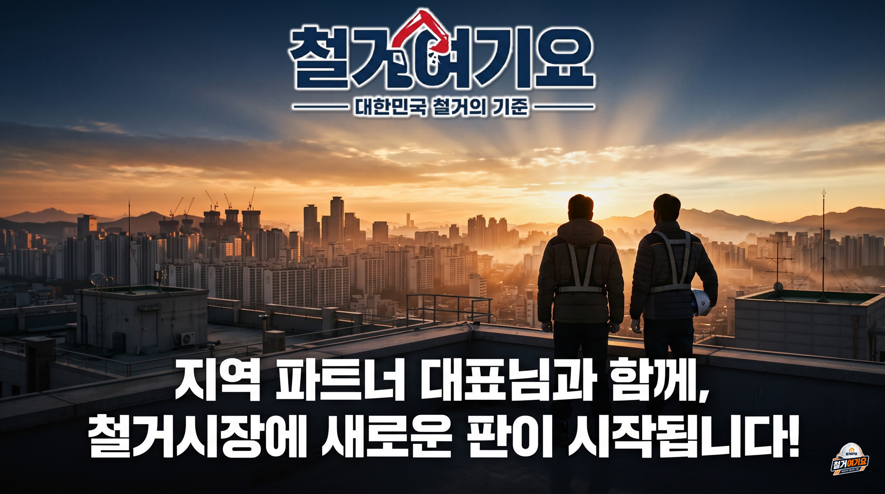
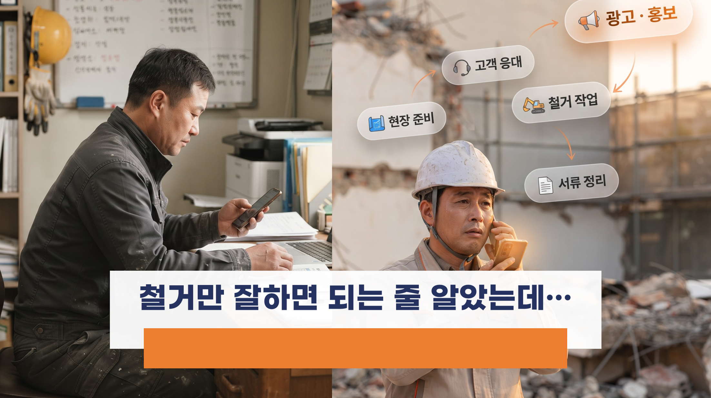
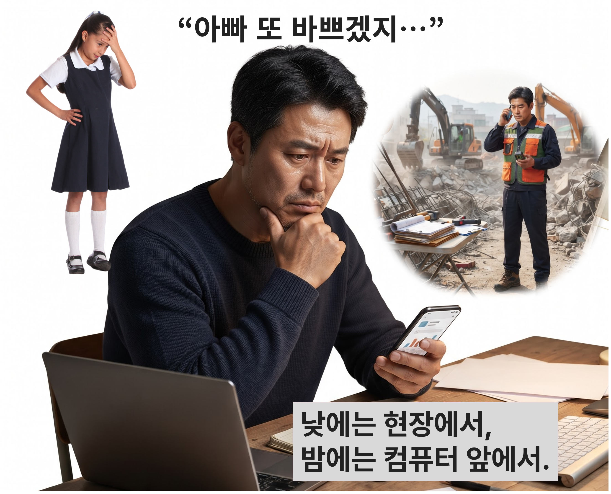
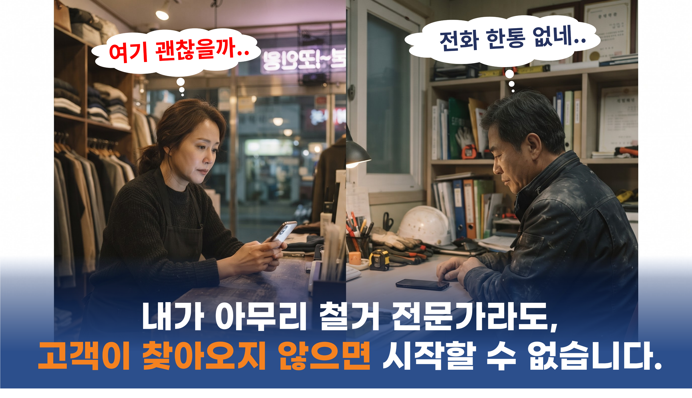
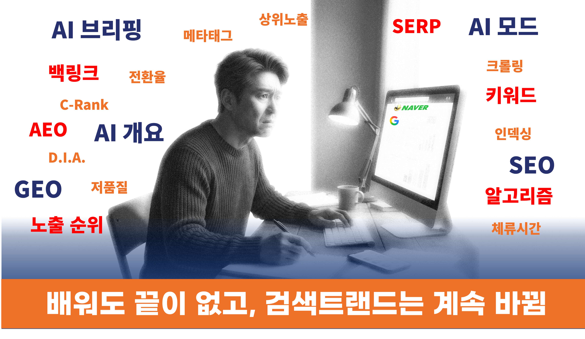
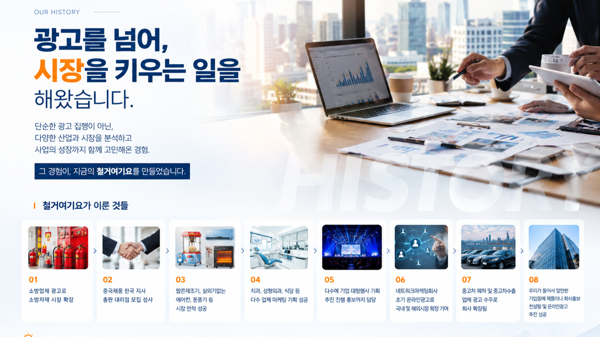
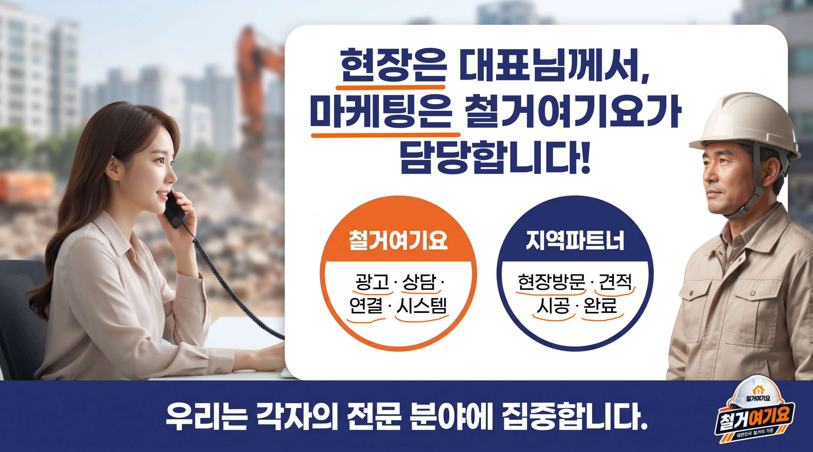
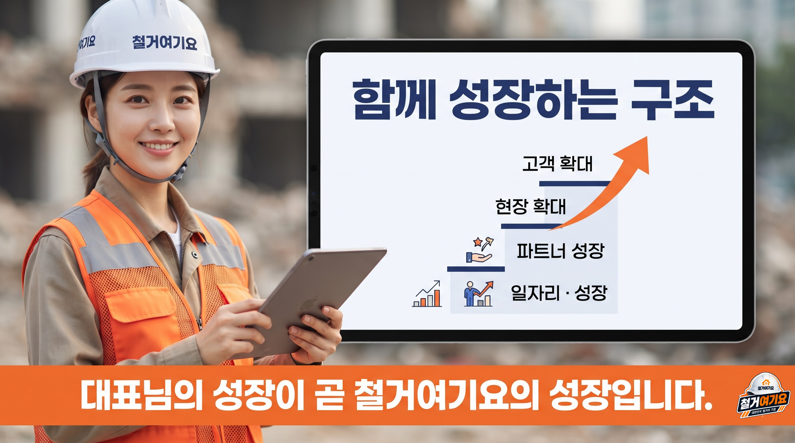
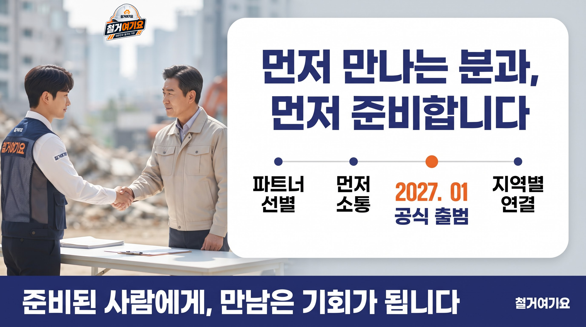
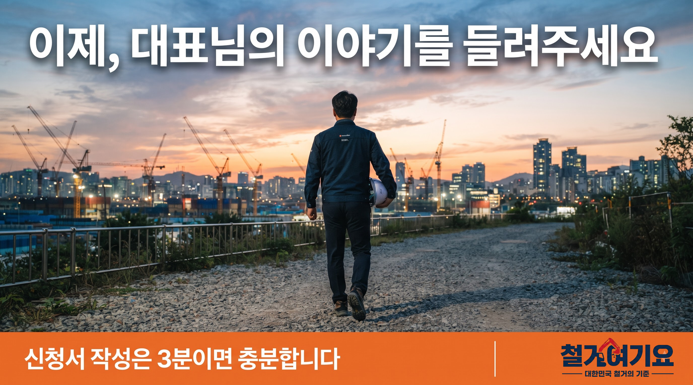

단순히 일감만 전달하는 관계를 넘어, 전문업체와 함께 더 체계적인 고객 확보 구조를 만들어가려 합니다.
정식 출범에 앞서, 지역을 대표할 대표님 몇 분께만 먼저 안내해 드리고 있습니다.
많이 바쁘시더라도 현장 일 마치시고 한가할 때 꼼꼼히 살펴보시면서, 시장 변화에 함께 참여하는 좋은 기회가 되었으면 좋겠습니다.
대표님은 철거를
잘하시면 됩니다.
고객을 만나는 구조는
함께 만들겠습니다.
철거 현장이 끝났다고, 대표님의 하루 일과가 끝나는 것은 아닙니다.
새벽 시간, 현장으로 나갑니다. 작업자를 챙기고, 장비를 내리고, 건물 관리실에 엘리베이터 사용 시간부터 확인합니다.
현장이 끝나면 견적서를 쓰고, 폐기물 처리와 일정을 맞추고, 전화와 문자에 답합니다. 그런데 여기서 끝이 아닙니다. 새로운 고객을 만나려면 까지 챙겨야 합니다.
철거업을 하다 보면 이런 하루가 어느새 당연해집니다. “원래 사업이 다 그런 거지.”
하지만, 철거를 잘하는 사람이, 현장 밖의 일까지 전부 직접 해야 하는 게 정말 당연한 일일까요?

낮에는 현장, 저녁에는 고객 전화, 밤에는 다시 컴퓨터 앞. 블로그는 어떻게 해야 하는지, 광고비는 왜 나가는지 혼자 고민합니다.

물론 가족을 위해서 하는 일입니다. 하루를 쪼개 씁니다. 이것이 대표님이 일하는 이유 그 자체입니다.
는 바로 이 네 가지에서 출발했습니다.
철거는 공간을 부수는 일로 끝나지 않습니다. 현장 상태와 공사 범위를 확인하고, 인력과 장비를 준비하고, 작업하고, 마무리까지 책임져야 합니다.
철거현장은 수많은 변수를 가지고 있습니다. 그래서 철거업에서 가장 중요한 건 경험과 기술입니다. 그런데, 대표님이 아무리 실력과 노하우를 갖추어도 입니다.
회사가 성장하기 위해서는 고객유입이 필수 조건이며 늘어난 기존고객을 통해 연결이되면 사업이 확장됩니다.
폐업을 위해 철거를 알아보려는 고객 대부분은 철거가 처음입니다. 폐업은 조심스러운 부분이라 주변에 알리는 것이 꺼려지기 때문에 대부분
대표님의 실력은 현장에서 빛납니다. 하지만 고객은 현장에 오기 전에, 이미 검색 화면에서 광고비를 많이 쓴 상위업체를 고릅니다.

직접 해보기로 합니다. 광고를 어떻게 하는지 공부도 하고, 블로그도 만들고, 사진을 올리고, 광고 계정을 열고, 검색어를 찾아봅니다.
이제 광고 시장도 변화가 시작되었습니다.
직접 하던 광고,이제 한계에 왔습니다.
검색하면AI가 답부터 내놓기 때문에,
사람들은블로그를 열지 않고 나갑니다.
열심히 써도보이지 않는 Zero-Click 시대.

그래서 우리는 결국 대행업체에 맡기거나, 숨고 크몽 같은 플랫폼에 의존하게 되는 것입니다.
이런 걸 한 번이라도 겪으셨다면, 그건 대표님이 광고를 몰라서가 아닙니다. 광고시장의 구조가 원래 그렇게 생겼기 때문입니다.
광고업계 안에서 보면, 이 시장은 광고보다 영업이 먼저 움직입니다.
각 단계마다 영업과 마진이 붙으면, 광고에 쓰이는 몫은 당연히 줄어듭니다. 그리고 그 어느 단계에도 철거를 아는 사람은 없습니다.
직접 해도, 맡겨도 풀리지 않았다면 문제는 방법이 아니라 구조입니다.
그래서 철거여기요는 이 중간 단계를 걷어내고,
파이가 큰 철거시장을 자체 광고로 진행하기로 결정했습니다.
저희 업체는 광고를 집행하는 일에만 머물지 않았습니다. 다양한 업종의 기업과 함께 온라인 광고를 기획하고, 제품을 알리고, 유통 파트너를 모집하고, 새로운 시장에 진입하기 위한 홍보와 사업 추진을 도왔습니다.
각 시장에는 서로 다른 고객과 유통 방식, 성장의 조건이 있습니다. 여러 업종의 사업을 경험하며 을 쌓아왔습니다.
온라인 마케팅부터 시장 확장, 유통망 모집, 기업 홍보와 행사 기획까지. 사업마다 필요한 일을 파악하고 실행으로 연결해 왔습니다. 워낙 다양한 분야에 산업을 추진해 왔습니다.

지난 3년 동안 10곳 이상의 철거업체 광고를 직접 운영하며 대표님들과 소통했습니다. 광고 성과뿐 아니라 고객 문의, 현장 사진, 견적과 상담 과정까지 가까이에서 살펴보며 철거업체가 고객을 만나는 과정에서 겪는 현실적인 어려움을 알아갔습니다.
그래서 온라인 마케팅과 사업 확장 경험을 가진 팀에, 을 더해 새로운 운영 구조를 구상했습니다. 해당 베테랑은 직원들과 현장 이해와 작업 기준을 공유하고 교육에도 함께 참여합니다.
고객을 만나는 과정과 현장을 책임지는 과정. 각자의 전문성을 하나의 흐름으로 연결하는 것, 그것이 가 만들고자 하는 플랫폼의 출발점입니다.

광고로 고객을 만나는 것은 시작일 뿐입니다. 중요한 것은 고객이 실제 현장을 맡길 수 있는 지역 전문업체와 연결되는 것입니다. 현장에서의 경험과 책임감은 고객이 철거여기요를 신뢰하는 데에도 영향을 줍니다.
각자가 잘하는 일에 집중하고, 고객을 만나는 과정과 현장 작업 과정을 하나로 연결합니다.
가 드리고 싶은 건 처음부터 거창한 약속이 아닙니다. 혼자 짊어지던 것 중 가장 무거운 짐, 고객을 만나는 일을 우선은 나누는 것입니다.
물론 신청한다고 바로 일이 쏟아지지는 않습니다. 그렇게 말씀드리지도 않겠습니다. 다만, 이 생긴다면, 대표님 사업의 계산은 분명 달라집니다.
고객이 늘면 현장이 늘고, 현장이 늘면 가 생깁니다.
하지만, 가 원하는 건 대표님이 저희에게 계속 의존하는 구조가 아닙니다. 사업을 진행하며 본격적으로 파트너십이 만들어지면, 광고·고객 응대·온라인 운영에 필요한 교육과 지원을 통해, 대표님의 사업이 스스로 설 수 있을 만큼 단단해지는 것. 그것이 저희가 생각하는 입니다.
초기에는 와 함께 커지다가, 언젠가 대표님이 저희 없이도 설 수 있을 만큼 커지는 것. 그게 이 구조가 성공했다는 뜻이라고 생각합니다.

지금 철거시장은 업체 하나하나가 각자 싸우는 구조입니다. 광고비로 싸우고, 가격으로 싸우고, 검색 순위로 싸웁니다.
는 이 시장을 하나로 묶으려 합니다. 한 업체의 고객이 아니라, 철거시장 전체 넓이를 키우는 것. 판이 커지면, 그 안에서 할 수 있는 일도 함께 늘어납니다.
아직 준비되지 않은 것을 지금 약속하지는 않겠습니다. 다만 철거와 맞닿은 틈새시장까지 판을 넓혀가겠다는 방향은 분명하고, 또한 분명합니다.
는 2027년 1월 공식 출범을 목표로 준비하고 있으며, 지역별 파트너 DB를 구축하고 있습니다.
오픈 뒤에 알아보는 것과, 오픈 전에 미리 지역 대표 파트너로 함께 하는 것은 같을 수 없습니다.
수도권을 시작으로 전국 규모의 빠른 메가-확산을 준비하고 있습니다. 지역별 검증된 전문성과 현장 장악력을 지닌 최고의 대표님들과 손잡고, 출범과 동시에 해당 지역의 철거 물량을 우선 배정하는 시스템을 구축할 생각입니다.
오픈 전 미리 가 되었으면 좋겠습니다.

저희는 지역마다 함께할 파트너를 소수로 정해두고 선별해 직접 연락을 드리고 있습니다. 는 단순히 많은 업체를 모집하는 것이 아니라, 각 지역에서 고객과 현장을 책임감 있게 연결해 나갈 수 있는 파트너를 찾고 있습니다. 지역별 협력 규모와 운영 여건을 고려해 함께할 업체를 신중하게 선정하며, 마인드·실력·서비스·현장 대응력을 갖춘 대표님과 장기적으로 신뢰를 쌓아가는 것을 첫 번째 목표로 삼고 있습니다.
또한, 가 그려가는 협력의 방향은 단순한 공사 연결에만 머물지 않습니다. 앞으로 플랫폼이 성장하고 지역 파트너들과의 협력 범위가 넓어지는 과정에서, 함께 기여하고 성장한 파트너에게 Passive Income 등 더 다양한 참여 수익에 기회가 열릴 수 있도록 여러 가능성을 검토하고 있습니다.
지금은 모든 계획을 공개하기보다, 함께할 파트너와 신뢰를 쌓고 지속 가능한 협력 구조를 만들어가는 데 집중하겠습니다.
지역·업무 범위·경험·장비·현장 대응력을 확인해 파트너 DB에 정리하고, 같은 지역이라면 먼저 저희와 손을 내밀고 시작한 대표님과 더 깊이 있게 준비합니다. 신청한다고 바로 일이 배정되는 것은 아니지만, 시작은 신청에서부터입니다.
대표님, 가 뭘하려는지, 어떤 회사인지, 협력조건과 상담은 어떤 방식으로 운영하는지 궁금한 점이 많으실 거라 생각합니다.
저희는 분명한 방향과 큰 그림을 가지고 준비하고 있습니다. 다만 아직 정식 출범 전인 만큼, 지금 모든 계획과 운영 방식을 한꺼번에 공개하기는 어렵습니다. 처음부터 모든 것을 이해하고 결정하실 필요는 없습니다.
우선은 지역의 고객과 철거 현장을 연결하는 새로운 협력 기회가 생겼다고 편하게 생각해 주셔도 좋습니다.
실제 협력이 시작되고 파트너십이 구체화되면, 함께 일하는 데 필요한 운영 방식과 기준을 더 투명하게 공유하고 하나씩 맞춰가겠습니다. 저희가 원하는 것은 서로의 전문성을 존중하며 함께 성장할 수 있는 관계를 만드는 것입니다.
는 대표님을 평가하려고 신청서를 받는 것이 아닙니다. 대표님이 어떤 현장에서, 어떤 방식으로 일해오셨는지 알고 싶어서입니다.

이제 한 걸음만 더 남았습니다.
지역 전문업체 파트너로
함께할 대표님을 기다립니다.
신청서는 3분이면 충분합니다. 작성해 주시면 지역·전문분야·경험·장비·현장 대응력 등을 확인한 뒤, 담당자가 순차적으로 연락을 드리겠습니다.
파트너 신청서 작성하기작성 3분 · 지금 먼저 시작하세요※ 신청서 작성은 파트너 DB 등록을 위한 절차이며, 신청 즉시 업무 배정이나 수익을 보장하는 것은 아닙니다.